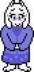
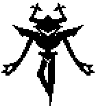

DELTARUNE
DELTARUNE
Chapter 3 opens in Kris's home during the night, while Toriel (Kris's mother) and Susie are asleep, Kris creates a Dark Fountain in the living room, everyone is transported into the new TV themed Dark World. Kris and Susie awaken in the Dark World, but cannot find Toriel, so they decide to begin exploring this new Dark World. They are quickly joined by Ralsei, and together they make their way through the Dark World. They meet Tenna, the host of Mr. Tenna's Marvelous Mystery Board, a game show that they agree to compete on, where they must complete games and then a physical challenge. The 1st round begins with an adventure on the Desert Board, where they must collect keys by battling and completing puzzles to enter the pyramid, after they successfully do so, they enter the pyramid and begin the physical challenge. The physical challenge is a cooking contest, Susie and Ralsei cook food that Kris must deliver to the customers. After completing the 1st round, Tenna must prepare for the 2nd game, so they are free to explore the TV World.

The next game begins on the Island Board, where they must take pictures of certain objects to gain entrance to Atlantis. After making it into Atlantis, they begin the Lightners Live physical challenge, a rhythm game where the party must play music to proceed. Tenna attempts a 3rd round, but Susie believes he is hiding something and they begin to investigate before the next round. They find a hidden area known as the Cold Place, and inside is Toriel, captured by Tenna. Tenna finds Kris, Susie and Ralsei in the Cold Place and captures them, forcing them onto the 3rd round, but no one wants to play his games anymore. Kris, Susie and Ralsei refuse to play the 3rd round and escape, Tenna and his employees begin searching for them as they make their way through the TV World. Eventually they arrive at the Cold Place, but Tenna won't allow them to pass without fighting him. After fighting Tenna, he is attacked by the Roaring Knight, who then attempts to capture Toriel. The Roaring Knight is extremely powerful and is impossible to defeat, the party is saved at the last moment by Undyne (the police chief), and she is then captured by the Knight. The Knight carries Undyne outside the Dark World and into the bunker, a mysterious building outside of Hometown.
